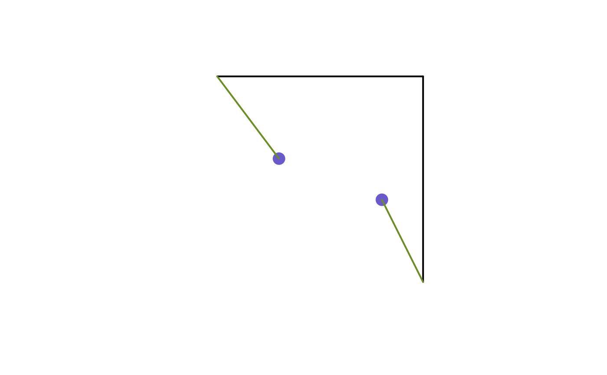
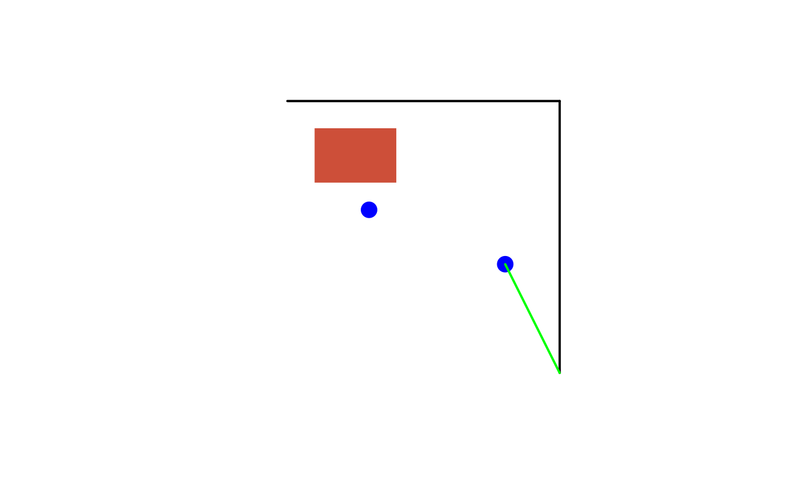

Calculate the minimum distance linestring from an sf POINT object to nodes of a sf LINESTRING object
desplim_line_nearest_node.RdCalculate the minimum distance linestring connection from an
sf POINT object to nodes of an sf LINESTRING object
Usage
desplim_line_nearest_node(
input_nodes,
input_lines,
input_buildings = NULL,
cast_substring = TRUE,
combine_nodes = TRUE,
ignore_equal = TRUE
)Arguments
- input_nodes
object of class sf with geometry type POINT or MULTIPOINT.
- input_lines
object of class sf with geometry type LINESTRING or MULTILINESTRING.
- input_buildings
optional object of class sf with geometry type POLYGON or MULTIPOLYGON to not be crossed.
- cast_substring
logical; should the input linestring be cast to substring? Default is
TRUE.- combine_nodes
logical; should the input nodes and nodes of the input lines be combined? Default is
TRUE.- ignore_equal
logical; should output linestrings which are exactly equal to one or more elements in
input_linesbe ignored? Default isTRUE.
Value
An sf object of type LINESTRING containing the minimum distance
linestrings from each node in input_nodes to nodes in input_lines or the
combined set of input_nodes and nodes in input_lines.
Details
For each input node, the function computes the minimum distance to
the chosen set of nodes and outputs the minimum distance linestrings. In
cases where the minimum distance is zero, due to overlap of the input node
and one or more nodes in input_lines, the second minimum distance
linestring is computed. If input_nodes or input_lines contain geometries
of type MULTIPOINT or MULTILINESTRING, they are converted to POINT and
LINESTRING respectively before computing.
Examples
# Create nodes, lines and a building
crs <- 32632
line1 <- sf::st_linestring(rbind(c(0, 10), c(10, 10)))
line2 <- sf::st_linestring(rbind(c(10, 10), c(10, 0)))
lines_sf <- sf::st_as_sf(sf::st_sfc(line1, line2, crs = crs))
node1 <- sf::st_point(c(3, 6))
node2 <- sf::st_point(c(8, 4))
points_sf <- sf::st_as_sf(sf::st_sfc(node1, node2, crs = crs))
building_poly <- sf::st_polygon(list(rbind(
c(1, 7),
c(1, 9),
c(4, 9),
c(4, 7),
c(1, 7)
)))
building_sf <- sf::st_as_sf(sf::st_sfc(building_poly, crs = crs))
# Compute connections with no building
connections_no_building <- desplim_line_nearest_node(points_sf, lines_sf)
print(connections_no_building)
#> Simple feature collection with 2 features and 0 fields
#> Geometry type: LINESTRING
#> Dimension: XY
#> Bounding box: xmin: 0 ymin: 0 xmax: 10 ymax: 10
#> Projected CRS: WGS 84 / UTM zone 32N
#> geometry
#> 1 LINESTRING (3 6, 0 10)
#> 2 LINESTRING (8 4, 10 0)
# Visualise
plot(sf::st_geometry(lines_sf), col = "black", lwd = 2)
plot(sf::st_geometry(points_sf), col = "slateblue3", pch = 16, cex = 2, add = TRUE)
plot(sf::st_geometry(connections_no_building), col = "olivedrab", lwd = 2, add = TRUE)

# Compute connections with building
connections_with_building <- desplim_line_nearest_node(
input_nodes = points_sf,
input_lines = lines_sf,
input_buildings = building_sf
)
print(connections_with_building)
#> Simple feature collection with 1 feature and 0 fields
#> Geometry type: LINESTRING
#> Dimension: XY
#> Bounding box: xmin: 8 ymin: 0 xmax: 10 ymax: 4
#> Projected CRS: WGS 84 / UTM zone 32N
#> geometry
#> 1 LINESTRING (8 4, 10 0)
# Visualise
plot(sf::st_geometry(lines_sf), col = "black", lwd = 2)
plot(sf::st_geometry(building_sf), col = "tomato3", border = NA, add = TRUE)
plot(sf::st_geometry(points_sf), col = "blue", pch = 16, cex = 2, add = TRUE)
plot(sf::st_geometry(connections_with_building), col = "green", lwd = 2, add = TRUE)
